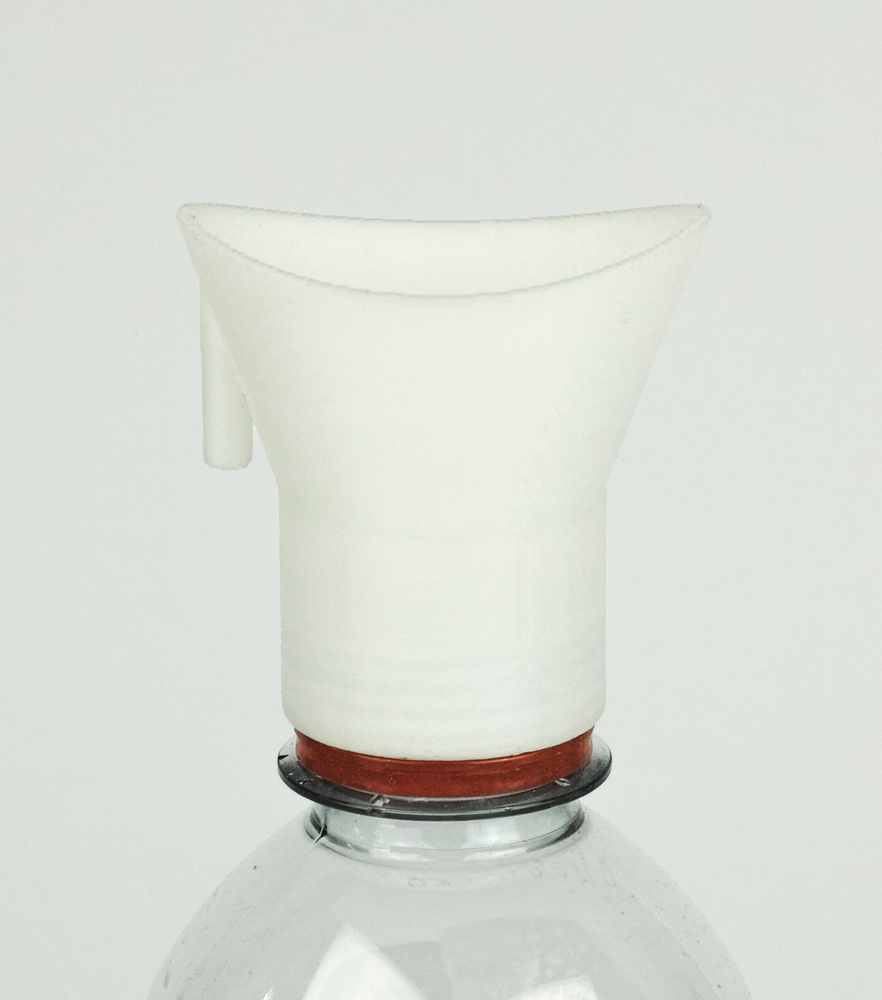

This bottle cap is designed for washing eyes exposed to tear gas / CS gas. You can 3D print this bottle cap and
put it as a lid on plastic water bottles. You can email this 3D model to your friends. (Try to open your eye when washing)


3D Model by Marco Federico Cagnoni, 香港人
Photograph by Thomas Ballouhey
Website by Seokyung Kim and Nels Salminen